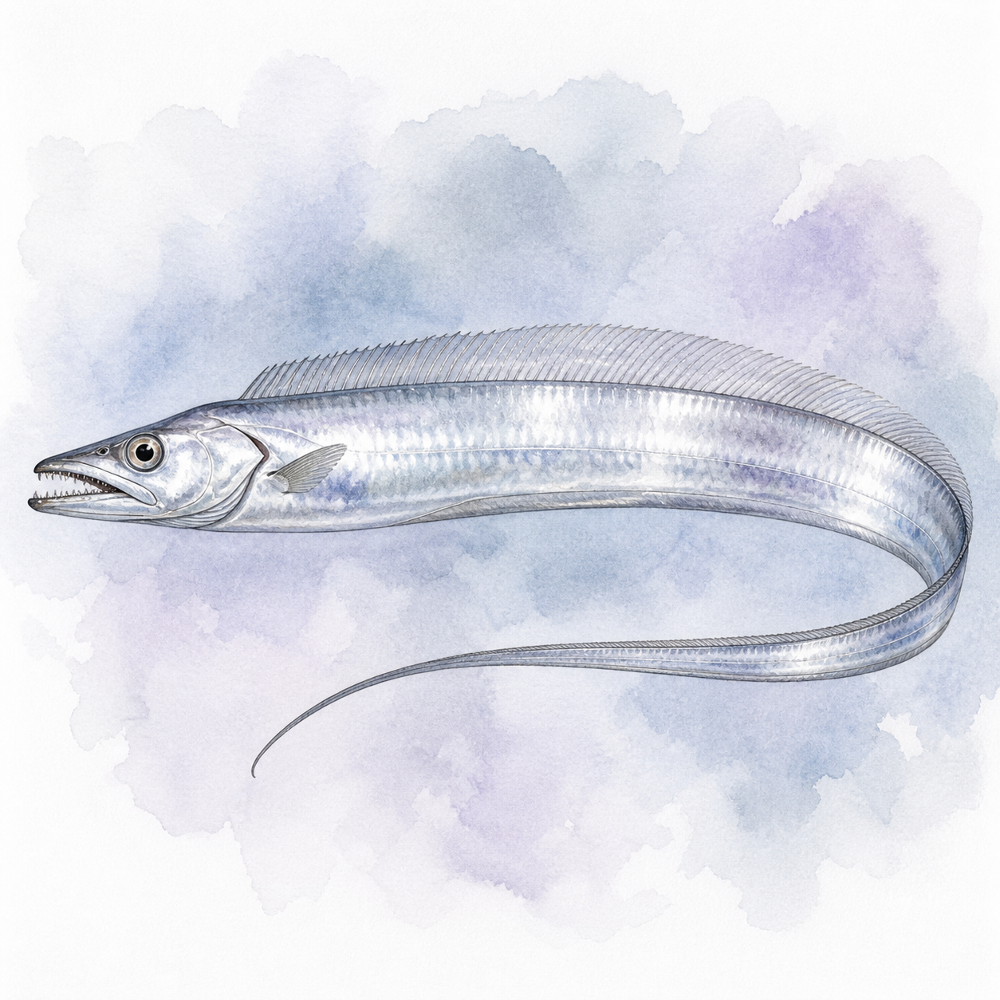

タチウオ
タチウオ
0〜47匹
60〜130cm
今週 75便・23船宿
トップ › タチウオ
神奈川・東京・千葉・茨城・静岡の5県の船宿を横断集計しています。
★ 今週実績あり（5魚種）
実績は走水沖（1,780便）・観音崎沖（1,236便）・猿島沖の御三家ポイントに集中しており、これを浦安・金沢八景・鴨居大室・久里浜など湾内各港の船が囲む構図。狙う水深は30〜60mが中心で、季節とともに群れが深場へ移る。金沢八景・鴨居はショート便も多く、半日で十分に釣果が出るのもこの釣りの良いところ。
★ 今週実績あり（18エリア）
| 1月 | 2月 | 3月 | 4月 | 5月 | 6月 | 7月 | 8月 | 9月 | 10月 | 11月 | 12月 | |
|---|---|---|---|---|---|---|---|---|---|---|---|---|
| 数釣 | ||||||||||||
| 型釣 |
※ 過去3年の関東船釣り釣果データより集計（2023年〜）
ハイシーズンは夏〜秋。当サイトの過去3年・8,069便の集計では9月（949便）・10月（907便）に報告が集中する。面白いのは冬で、小柴・横浜では1月が月別実績の上位に入り、深場に落ちた群れを一年中追える。相模湾（平塚）は11〜12月がピークと東京湾より遅れてくるので、晩秋からは行き先の選択肢が増える。当サイト集計のサイズ中央値は全長105〜119cm（エリア別）と型は安定して良く、指5本・全長120cm前後の「ドラゴン」も現実的な目標だ。 月ごとの詳しい振り返りは「2026年5月 タチウオ釣果月報」で読める。
船釣り全般の Q&A（服装・船酔い・予約・ライフジャケット等）はよくある質問ページにまとめています。
関東タチウオ船釣りの釣果は1月・6〜10月に実績が集中しています。2〜5月・11〜12月も狙える時期です。 → エリア別のシーズン傾向を見る
関東タチウオ船釣りの主なエリアは金沢八景（1399便）、浦安（1398便）、鴨居大室港（1020便）です。
関東タチウオ船釣りの一日の釣果は10〜27匹が標準的なレンジです。中央値は17匹・上位10%の好日は37匹以上です。最高実績は240匹です（いずれも個人釣果ベース・船全体の合計数は除く）。
難易度は中級者向けの釣りです。テンヤ・コマセなど釣り方の幅が広い魚。銀色に輝く魚体と独特のアタリが病みつきになります。関東では113船宿が出船実績あり。多くの船宿でレンタルタックルや仕掛けの購入が可能です。 → 初心者向けガイドを見る
夏（7〜8月）の浅場と秋〜冬（10〜2月）の深場で釣況が異なります。夏タチは水深10〜20mの浅場でライトタックルでも数釣りができ初心者向け、冬タチは80〜100mの深場でテクニカルですが指5本級ドラゴンが狙える季節です。釣り方は天秤・テンヤ・ジギングの3スタイルがあります。出典: fish.shimano.com、yupfishing.com
ただ巻きと「ストップ＆ゴー」（巻いて止める）の2パターンが基本です。スローなただ巻きでも巻きスピードを当日のタチウオの活性に合わせて調整するのが釣果の鍵。アタリがあっても焦らず、追い食いを待ってから合わせるとサイズアップを狙えます。出典: yamaria.co.jp
走水沖・観音崎沖・猿島沖が東京湾の3大ポイントです。神奈川側（横須賀・久里浜）と千葉側（浦安・木更津）の両方から船が出ており、季節と海況によって魚の付き場が変わります。出船前日の各船宿のブログで状況を確認すると効率的です。出典: yupfishing.com
